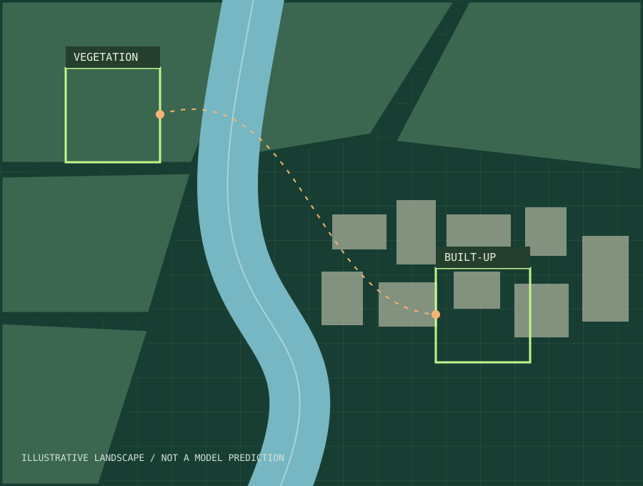

Collect
Sentinel-2 RGB imagery for Rotterdam, Bengaluru and a separate nearby rural training area.
AN OPEN MACHINE LEARNING EXPERIMENT
Can a satellite-image model trained in the Netherlands recognise land cover in India?
A small experiment in transfer learning, geography, and what happens when data crosses borders.

THE QUESTION BEHIND THE CODE
Buildings, vegetation and water can look different across locations and seasons. GreenBridge tests how a simple classifier behaves across two settings. The long-term motivation is more accessible environmental mapping. This first version tests the method, not a planning decision.
01 / THE METHOD
Sentinel-2 RGB imagery for Rotterdam, Bengaluru and a separate nearby rural training area.
Claude proposes training labels. People review test labels. AI labels remain clearly marked.
A frozen pretrained ResNet-18 with a new classification head. Two experiments, five epochs each.
The same held-out patches test both models. Spatial separation reduces overlap between train and test.
02 / FIRST RESULTS
DUTCH TEST ACCURACY 25 images
Adding Indian data did not improve Dutch accuracy in this run. This experiment does not establish why.
| Training | Test | Samples | Accuracy | Macro F1 |
|---|---|---|---|---|
| NL only | NL | 25 | 0.760 | 0.463 |
| NL + India | NL | 25 | 0.680 | 0.384 |
| NL only | India | 3 | 1.000 | 0.333 |
| NL + India | India | 3 | 1.000 | 0.333 |
83 training samples for NL only; 214 for joint training. Macro F1 averages all three classes, including absent classes as zero. Both models missed the single Dutch water test image.
03 / WHAT THIS DOES NOT PROVE
The Indian test set is too small and covers only one class. The Dutch test set is also small and mostly vegetation. Most training labels came from Claude and may contain errors.
Unequal training sizes, seasonal differences and geographic sampling can affect results. One seed cannot establish a general trend. This model does not measure park access, heat exposure or where new green space should go.
Inspect the recorded experiment ↗04 / THE NEXT EXPERIMENT
01 Independently labelled data covering both countries.
02 Balanced, geographically separate test areas.
03 Simple baselines, multiple seeds and error maps.